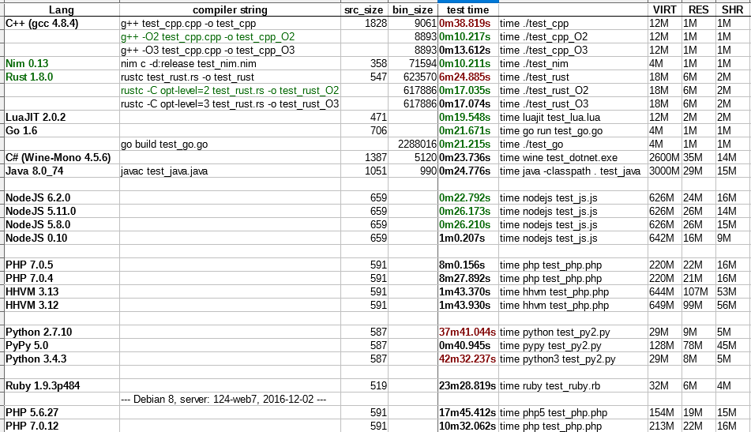

Сравнение производительности Языков Программирования
(для вычислительных задач)
Автор исследования: Разбицкий Вячеслав
Дата исследования: 2016-03-17
По мотивам статьи 2014-2015 года Performance of several languages (by Carles Mateo).
Цели и задачи
Цель работы: оценка эффективности ЯП для вычислительных задач
Идея: заключается в том, что данная оценка эффективности могла бы служить хорошим подспорьем, при выборе ЯП для "Вычислителей".
Решаемые задачи:
- Сравнение времени исполнения программы (включая время запуска VM / интерпретатора);
- Сравнение потребляемой памяти при исполнении программы;
- Сравнение размера файла исходного (и, в ряде случаев, компилируемого) кода.
- Оценка "легкости" развертывания среды исполнения и "пригодности" для "консервативного подхода" в администрировании наших серверов.
Методика
Я постарался воспроизвести оригинальное тестирование для интересующего меня набора ЯП (10 240 000 000 итераций с помощью 3 вложенных циклов, с минимальным вызовом "библиотечных функций" и наличием условного ветвления), но с небольшим изменением:
- я сделал 2 счетчика:
- оставил i_counter (int) без изменений - инкрементится с каждой итерацией; когда он достигает значения 50 - сбрасывается на 0;
- добавил l_counter (int64) - только инкрементится с каждой итерацией (и в итоге становится равен кол-ву итераций).
Тут проявился первый прикол - в некоторых языках пришлось принудительно указывать тип "Int64", не смотря на то, что ОС - 64-битный линукс.
- В первый цикл верхнего уровня (от 0 до 9) - я добавил вывод на stdout
номер итерации этого цикла.
Исходный код адаптировался под конкретный ЯП и выглядел примерно так:
rasla@rasla:~/rust > cat test_nim.nim var i_counter = 0 var l_counter = 0 echo("Test Nim:") # loops here for loop1 in countup(0, 10-1): echo("loop1: ", loop1) for loop2 in countup(0, 32000-1): for loop3 in countup(0, 32000-1): i_counter += 1 l_counter += 1 if i_counter > 50: i_counter = 0 echo() echo("i_Counter: ", i_counter) echo("l_Counter: ", l_counter)Итого, при запуске в консоли получаем:rasla@rasla:~/rust > time ./test_nim Test Nim: loop1: 0 loop1: 1 loop1: 2 loop1: 3 loop1: 4 loop1: 5 loop1: 6 loop1: 7 loop1: 8 loop1: 9 i_Counter: 37 l_Counter: 10240000000 real 0m10.259s user 0m10.204s sys 0m0.016s rasla@rasla:~/rust >
- Я провел тестирование на более свежих версиях ПО и добавил ЯП, которых не было в оригинальном тесте (C#, Rust, Nim).
- Для сравнения в таблицу добавлены колонки значений потребления памяти (htop).
Условия запуска (и паразитная нагрузка "десктопа") были идентичными, на моей рабочей станции разработчика.(AMD Athlon(tm) II X3 440 Processor 3,0 GHz / 1x 4Gb DDR3
Linux Mint 17.3 KDE amd64 / kernel 4.2.0-34-generic) Тест каждого ЯП запускался 3 раза подряд, из которых выбиралось МИНИМАЛЬНОЕ ВРЕМЯ (time real), таким образом:
rasla@rasla:~/rust > time ./test_nim; time ./test_nim; time ./test_nim
Результаты
Файл с таблицей результатов: lang-test_2016-03.ods
Файл с исходным кодом: lang-test_2016-03.src.7z
Для самых нетерпеливых финальная табличка (меньше времени test_time - лучше):
Примечания
1) Теоретический предел минимального времени исполнения цикла на моем компе - 6,89 секунд!
(максимальная частота процессора = 3 GHz; ОС - однозадачный DOS;
Процессор позволяет за 1 такт выполнить все инкременты, за второй такт сравнить все условия,
а за третий такт произвести условное обнуление,
затратами на печать в stdout в данном случае можно пренебречь):
Кол-во процессорных тактов:
(1+1) * 10240000000
+ (1) * 10240000000/50
= 20 684 800 000 процессорных тактов
Частота процессора = 3 GHz
Время исполнения кода:
20684800000
/ 3000000000
= 6,8949(3) сек
2) Как может заметить внимательный читатель (исходного кода) - я сделал неоптимальную последовательность инкрементов:
for loop3 in countup(0, 32000-1):
i_counter += 1 #c1
l_counter += 1 #c2
if i_counter > 50: #c1
i_counter = 0
Конечно же процессору было бы эффективнее "сначала увеличить И сравнить i", а с "L" разбираться потом...
Сделано это НАМЕРЕННО, чтобы заставить компилятор/интерпретатор помучаться с оптимизацией, если он умеет такое делать.
C / C++
Более высокая степерь оптимизации (-O3) далеко не всегда лучше "рекомендуемой по-умолчанию" оптимизации (-O2).
Nim
Победитель среди компилируемых ЯП!
Как по скорости работы, так и по компактности и понятности исходного кода с ним мало кто сравнится!
Язык настолько вкусный, что мимо него проходить НЕЛЬЗЯ, хотя бы в академических целях:
Nim (ранее известный, как Nimrod) — язык программирования со статической типизацией, поддерживающий процедурный, объектно-ориентированный, функциональный и обобщённый стили программирования, при этом остающийся простым и эффективным.
Nim сочетает мощь Lisp, простоту и понятность Python и высокую производительность C.
Важной особенностью, которую Nim унаследовал от Lisp, стало то, что абстрактное
синтаксическое дерево (AST) является частью спецификации языка,
что позволяет поддерживать мощную систему макросов и обеспечивает создание предметно-ориентированных языков (DSL).
При его создании основополагающими были три принципа (перечисляемые в порядке их важности):
эффективность (efficiency), выразительность (expressiveness) и элегантность (elegancy),
обозначенные самими авторами, как «3E».
Rust
ЯП от Mozilla Research, который ГАРАНТИРУЕТ отсутствие ошибки "переполнение буфера".
Он сопоставим по скорости и возможностям с C++, однако, даёт бOльшую безопасность при работе с памятью.
После нескольких лет активной разработки первая стабильная версия (1.0) вышла 15 мая 2015 года, после чего новые версии выходят раз в 6 недель. ("типичный" график выпуска версии для Мозиллы)
LuaJIT
Первый из "некомпилируемых" ЯП! при этом оказался быстрее "неоптимизированного С++".
Golang
Очень интересный ЯП тем, что может компилироваться "мгновенно" - что позволяет запускать простые программы "налету".
"Бинарный файл - самодостаточный и не требует наличия других файлов/библиотек на машине для запуска
C#
Вот уж чего не ожидал, так это того, что C# окажется быстрее Java (при запуске в ОС Linux 64-bit)!
Компиляция C#-проекта возможна 3 "стабами": "32" / "64" / "any CPU" (есть ещё "arm64" - но он не проверялся).
Так же неожиданностью оказалось то, что "64" не запустилась на моей amd64 ОС Linux,
НО "32" оказалась почти дважды быстрее "any CPU" (и чем "64" на ОС Windows)!
Java
Все прелести качественного JIT-компилятора: "написано однажды - работает везде" (в рамках своей JRE-платформы), да ещё и насколько быстро!
NodeJS
JIT-компилятор в виртуальной машине JS (Chromium V8) очень быстро прогрессирует и уже "почти догнал" по скорости Java.
Так же весьма бросается в глаза "скорость", с которой NodeJS наращивает производительность JS JIT.
PHP
PHP хорошо прогрессирует, пусть даже и ценой "неполной обратной совместимости" (что, в данном случае, даже "хорошо").
Версия 7.0 стала ещё почти в 2 раза быстрее и "экономичнее" (чем PHP 5.6) в плане потребления памяти, при исполнении скриптов.
HHVM оказался в 8 раз быстрее PHP 7.0 (на том же самом коде), но потребляет для этого больше памяти и не полностью совместим с PHP.
Ещё про HHVM можно добавить, что по опыту эксплуатации, довлоьно часто на него жалуются, что примерно через час работы, его приходится рестартовать
Python
Как и в статье-оригинале, скорость интерпретации в Питоне невелика. Сила Питона в другом, том что находится за пределами задач данного исследования.
Однако, очень сильно меня удивил PyPy 5.0 - я ожидал "прирост производительности", но не настолько большой (60 x) - и это ободряет!
Выводы
Хотя с общим выводом я скорее соглашусь (о том, что будущее большей части исполняемых программ, видимо за JIT).
Однако и разница в методике тестирования очень значительна:
- у него была "чистая ОС", безо всего кроме необходимого для запуска тестируемых программ" - у меня же "обычный десктоп разраба/админа";
- у него суммарно использовалось 4 счетчика, у меня 5.
Для себя лично открыл просто НЕВЕРОЯТНО интересный, быстрый, компактный и богатый Язык Программирования - Nim !